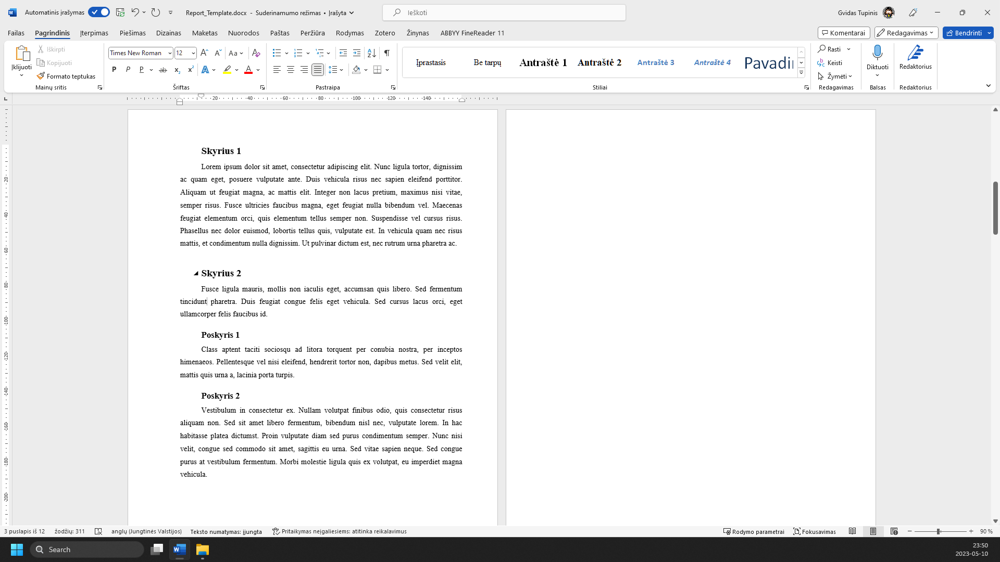
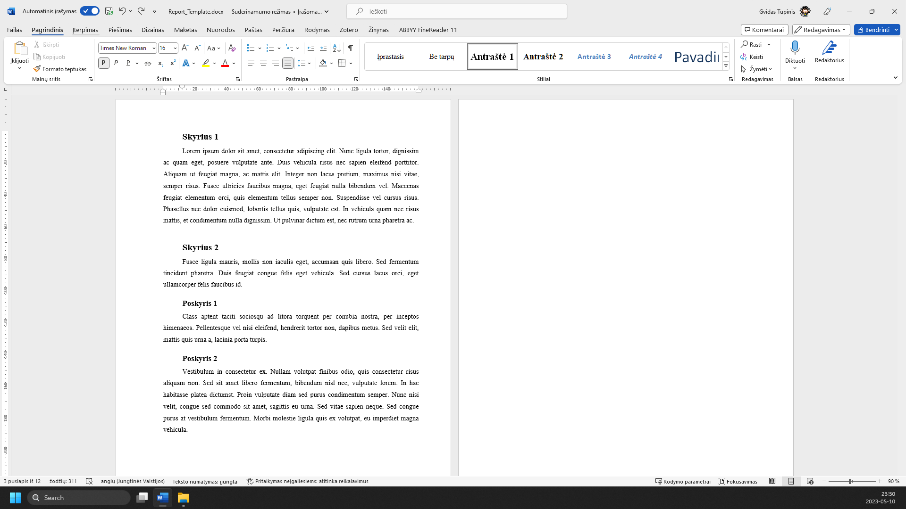
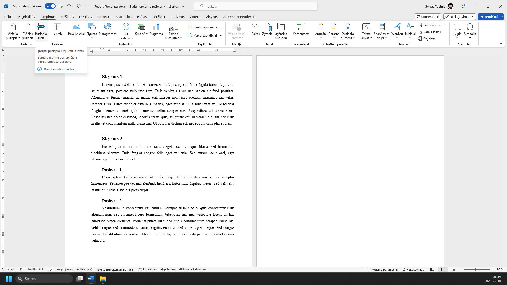
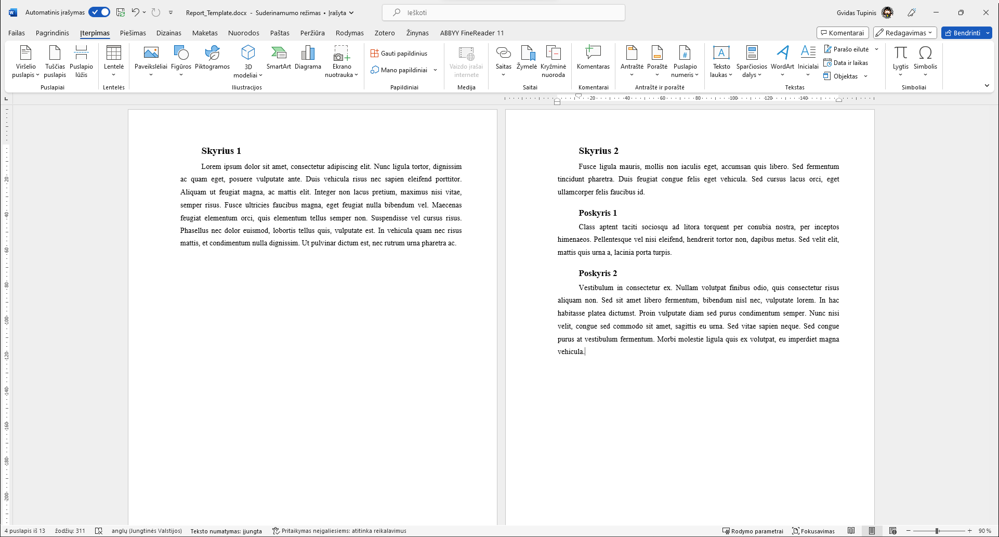

RAŠTO DARBO RENGIMAS
Puslapio lūžio įterpimas
1 žingsnis iš 4
1.
Pasirenkate vietą, nuo kurios norite pradėti naują puslapį

2.
Pasirenkate meniu ‘Įterpimas’

3.
Spaudžiate mygtuką ‘Puslapio lūžis’ Taip pat galima spausti klavišų kombinaciją CTRL+ENTER

4.
Tekstas sėkmingai perkeltas į kitą puslapį

Žaliai apibrėžta vieta rodo, kur paspausti. Vaizdą gali padidinti naršyklės mastelio valdikliu. Žingsnius taip pat keičia klaviatūros rodyklės.